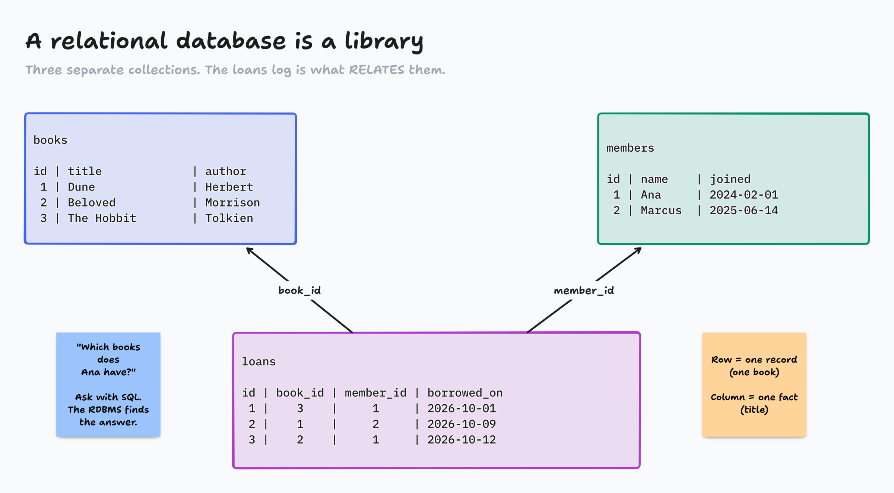
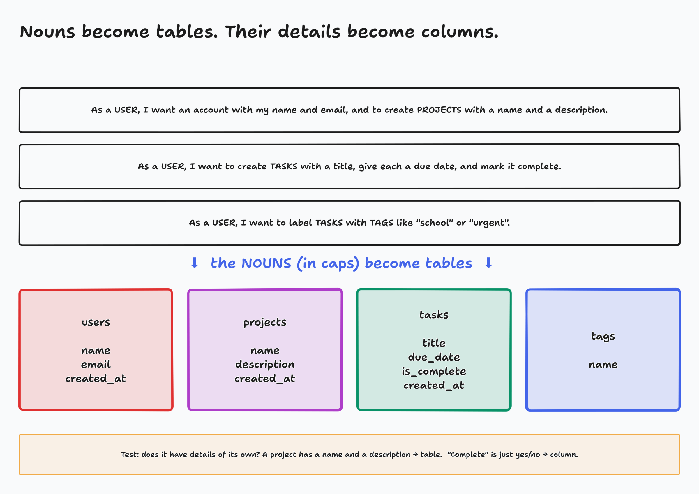
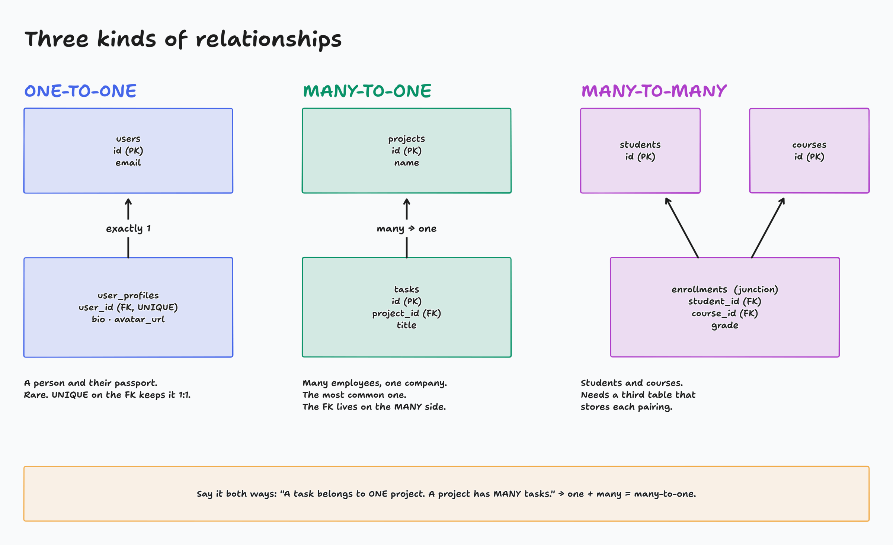
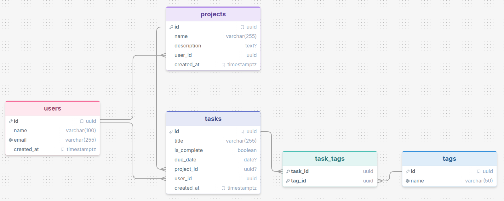

Building Applications · Relational Databases · Part 1 of 2
Relational databases: plan your data before Claude builds it
Today you design the data on paper. Next lecture it moves into a real cloud database.
Today
- What a relational database is: tables, rows, columns, SQL
- Read your user stories and pull out the tables and columns
- Pick the right PostgreSQL data type for each column
- Connect tables with keys: one-to-one, many-to-one, many-to-many
- Draw it all in DrawSQL, live
Add a task. Refresh. It's gone.
The browser forgets. A database remembers, for every user, on every device.
kabeier.github.io/Databases-and-Supabase/task-manager/

diagrams/DB1-01-library.tldr
A table is a spreadsheet with rules
tasks
| id | title | is_complete | created_at | project_id |
|---|
| 1 | Write intro email | false | 2024-11-01 09:00 | 3 |
| 2 | Review pull request | true | 2024-11-01 10:30 | 3 |
| 3 | Plan sprint | false | 2024-11-02 08:00 | 7 |
- Each row is one record: one task
- Each column is one fact about it
- id is the primary key: unique, never repeats
- project_id points at a row in another table
- Names are plural and
snake_case
The RDBMS is the engine. SQL is how you talk to it.
A Relational Database Management System stores the tables, keeps the rules, and lets many users read and write at once without breaking anything.
Popular ones: PostgreSQL, MySQL, SQLite, SQL Server. We use PostgreSQL. It's what Supabase runs.
-- "Which tasks aren't done yet?"
SELECT title
FROM tasks
WHERE is_complete = false;
-- Claude writes this for you.
-- You need to be able to read it.

diagrams/DB1-02-nouns-to-tables.tldr
Table or column? Ask: does it have details of its own?
Its own table
- project: has a name, a description, its own tasks
- tag: has a name, and many tasks share it
Just a column
- complete: yes or no
- due date: one date
- status: pending, in progress, done
If it's a single value, it's a column. If it has its own details, it's a table.
Activity: Noun Hunt
- Open the Recipe Box stories (link in chat)
- Click words to mark them: once for table, twice for column
- In chat, post your tables, each with its columns
- Bonus: which table is hiding? (Hint: "an amount for each")
Page: activity-noun-hunt/
Every column gets a data type
INTEGERWhole numbers. Seats at a table: 4, never 4.7.
BIGINTReally big whole numbers. Page views.
NUMERICExact decimals. Money: $19.99, exactly.
VARCHAR(n)Short text with a limit. Usernames, emails.
TEXTText with no limit. Descriptions, comments.
BOOLEANtrue or false. A light switch.
DATE / TIMESTAMPTZA day / an exact moment, time zone aware.
UUIDA random, globally unique id.
The right type keeps bad data out. Never store money as FLOAT.
Quick fire · answer in chat
price · is_published · birthday · bio · email · last_login · seat_count
I'll call one out. You type its data type.
Live: draw the Task Manager in DrawSQL
tasks
| column | type | notes |
|---|
| id | UUID | primary key |
| title | VARCHAR(255) | required |
| is_complete | BOOLEAN | defaults to false |
| due_date | DATE | optional |
| created_at | TIMESTAMPTZ | set on insert |
| project_id | UUID | points at projects.id |
drawsql.app/draw
- No account needed
- Pick PostgreSQL
- Add table, then add columns and types
- Tables: projects, tasks

diagrams/DB1-03-relationships.tldr
How to choose: say it both ways
| Sentence | Answer | Where the FK goes |
|---|
| A task belongs to one project. A project has many tasks. | many-to-one | on tasks (the many side) |
| A user has one profile. A profile belongs to one user. | one-to-one | either side, with UNIQUE |
| A task has many tags. A tag is on many tasks. | many-to-many | a junction table: task_tags |
Don't reach for many-to-many unless both directions really are "many".
Activity: Relationship Sorter
- I show two tables
- Say it both ways in your head
- In chat on "go": 1:1, M:1 or M:M
- Then: where does the foreign key go?
Page: activity-relationship-sorter/
Live: connect the tables, add tags
- Drag from tasks.project_id to projects.id
- Add tags and the junction table task_tags
- Connect task_tags to tasks and to tags
- Screenshot it. We'll use it later.
The story that needs it
"I want to label tasks with tags like school or urgent (a task can have several)."
Several tags per task, and each tag is used on many tasks. That's many-to-many.

demo-kit/task-manager-erd.png
Draw it first. 15 minutes of diagramming saves hours of refactoring.
Your diagram is a thinking tool, a teamwork tool, and the instructions you give Claude.
Homework, Part I
- Priority 1, Netflix Clone II: think through what data it needs. A users table is fine; no login yet.
- Priority 2, your own app: map your database. Nouns → tables, details → columns, pick types, decide relationships, draw it in DrawSQL
- Priority 3, FreeCodeCamp: 50 steps of the Python certification
Bring to next lecture
- A screenshot of your DrawSQL diagram
- Your user stories in a
user_stories.md file
- Optional: a free Supabase account (sign in with GitHub)
Next time these go into a real Supabase database.